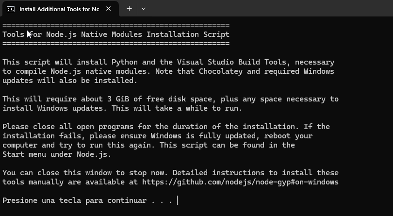
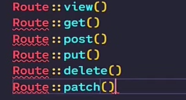
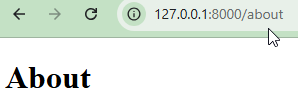
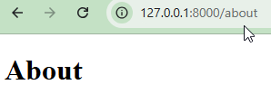

1 - Fundamentos
Autoría:
Antonio Jesús Marín Espejo- pamarin@iesfranciscodelosrios.es
Última versión diciembre 2024
Introducción
Vamos a analizar el tutorial: Curso Profesional De LARAVEL: 1 - Fundamentos Enlace tutorial: https://www.youtube.com/watch?v=kV2jUg-iXYw
Version Laravel
Tener en cuenta que el tutorial es del año 2023 y está hecho bajo Laravel 10 y tiene algunas diferencias con la versión actual

Apartados/tiempos:
0:00:00 - Introducción Laravel 0:05:47 - Configuración Del Entorno De Trabajo 0:13:54 - Patrón MVC 0:25:30 - Estructura De Proyecto 0:51:14 - Hola Mundo 1:10:18 - Conclusiones.
Introducción Laravel
Configuración Del Entorno De Trabajo
Patrón MVC
Laravel permite diferentes patrones de arquitectura, aunque MVC es el por defecto.

Cuando cliente (persona o sistema) introduce RUTA.
- Acude a un fichero de rutas y la asocia con un CONTROLADOR
- Cada URL tendrá su propio controlador
- Controlador tendrá la lógica de dicha petición, con dos enfoques:
- Mayor peso Controlador > Modelo
- Mayor peso Modelo > Controlador
- Esos datos el controlador se los solicita al modelo, que es representación en CLASE de los datos de una tabla de forma transparente
- Devuelme mediante ORM y no sin instrucciones SQL los datos que necesite.Sistema de Persistencia (Eloquent patrón Active record, Doctrine patron datamaper)
- Depende de si somos API pura o diseñamos la vista mediante plantilla (BLADE) devolveremos una u otra
- Queda una gran cantidad de elementos añadidos como Middleware para autenticación que se irá viendo más adelante
Estructura De Proyecto (enlace)
Pendiente:
- Patrón MVC, ventajas e inconvenientes: más adelante cuando se vean otras arquitectura.
Modelo/Controlador ¿decisión?
- Grandes controladores con pequeños modelos
- Grandes modelos con pequeños controladores
Crear proyecto en carpeta UD 6 Laravel/1.Fundamentos
Vamos a crear el primer proyecto para ver el patrón y la estructura de archivos.
Lo podemos hacer a través de Laravel Herd pero conviene descargar Composer e ir aprendiendo a través de terminal y de comandos.
OPCIÓN 1. Composer create proyect laravel/laravel miproyecto
Instalación a través de Composer:
composer create proyect laravel/laravel miproyecto
Y comienza a descargar el proyecto


Error común: Necesitamos tener Composer en el path
OPCIÓN 2. Instalador de Laravel
¿Cómo instalar? composer global require laravel/instaler


Ahora, con el comando laravel instalado es más fácil: laravel new helloworld
te ofrece, al igual que en Laravel Herd, diferentes opciones y starter kit
actualizado 2024 y diferente al tutorial
Esta parte es ligéramente diferente al tutorial Gogodev, donde no le ofrecen las siguientesopciones
Si quisieramos crear una versión anterior, usaríamos:
- Abre la línea de comandos en tu servidor y ejecuta el siguiente comando:
composer create-project --prefer-dist laravel/laravel:^10.0 helloworld10


No hacemos las migraciones (todavía)


Ahora accedemos al proyecto para observar la estructura de carpetas.
OPCIÓN 3. Laravel Herd: Nuevo proyecto
Con Laravel Herd instalado, podemos probar a crear un nuevo sitio de la siguiente forma, aunque tiene algunas limitaciones:
- Add Site:


Aunque no podemos elegir carpeta:


Ver en el navegador: 
Abrir en el IDE como Visual Studio Code desde la carpeta:C:\Users\user\Herd\helloworld

You can start your local development using:
➜ cd helloworld ➜ npm install && npm run build
error de seguridad ShellScript (No se puede cargar el archivo C:\Program Files\nodejs\npm.ps1 porque la ejecución de scripts está deshabilitada en este sistema)

➜ composer run dev
Desde la Versión 11 de Laravel, deberás Instalar Node JS y npm en Windows


Elementos más importantes (enlace)
Localizamos elementos MVC y partes más importantes
- .env: archivo de configuración, el entorno, bbdd, mensajería ...

- routes: route dispacher asocian URL con controlador
- API (ya no lo crea por defecto)
- php artisan install:api


- Web rutas con vistas HTML

- Tras instalar API:
- resources/views: vistas del proyecto (Welcome)

- app/Models: Para los modelos
- app/HTTP/Controllers: Controladores del proyecto


Estas carpetas son las más importantes al inicio.
Veremos ahora otros elementos importantes que entran en juego:

vite.config
Nos hace el empaquetado (Web Packer), y aquí se define.
CSS, Javascript ...
README.md
Para la documentación, cómo se instala el proyecto y las anotaciones.
PHPUnit.xml
para el testing por defecto aunque hay otras
package.json
Controlar las dependencias a través de node. Vite lo va a necesitar
composer lock y json
equivalente al package para Composer
Artisan
Gestor de comandos en Laravel para la terminal: creación controladores, modelos, arrancar el sistema, factory, seeder..
.gitignore y .gitatributtes
Para el repositorio Git
.env
ignorado en el gitignore para info sensible
.env.example
Igual pero para poder subirlo al repositorio sin contraseñas, si que tendrá la estructura que necesita
.editorconfig
Configuración del entorno de edición
Cómo instalar API Rest en Laravel 11
php artisan install:api
Instalar la API en Laravel 11 es realmente sencillo, basta con ejecutar un comando, el cual creará todo lo necesario para poder desarrollar nuestras APIs en Laravel haciendo uso de Laravel Sanctum.
En versiones anteriores de Laravel, la API ya venía instalada y configurada por defecto sin hacer nada, pero ya que no todos los proyectos requieren del desarrollo de una API, no tiene sentido que venga de saque porque sí, así que es una buena elección hacer que la API en Laravel sea opcional.
Directorios
vendor
Es la librería, framework laravel, desarrollo de terceros... (como nodemodules)
Aquí no vamos a escribir nada
test
para test unitarios y features
storage
Para almacenar, si sube imagen de perfil, archivos PDF...
Esto es para almacer en disco, también se puede usar en la nube
framework
Para que el sistema almacene archivos de caché, sesión, logs, etc...
routes
Comentando elementos principales MVC
- api: para rutas de nuestra api a modo de backend puro sin frontales, endpoints
- canales: para emitir eventos y que se escuchen (ya no viene por defecto)
- usuario creado, factura emitida ...
- console: para definir los comandos que nosotros disponemos en nuestro sistema, se verá adelante
- web: rutas para servir directamente en el navegador (welcome)
resources
Recursos para el front: HTML; CSS, ...
public
punto de acceso a nuestro sistema, en el despliegue el usuario tira del index.php para ponerlo todo en marcha
lang
Creamoes una carpeta para cada uno de los lenguajes, localización ...
database
Compuesto por tres directorios
- factories
- datos de masivos de prueba, 200 usuarios ...
- migrations
- Para definir cómo representar nuestros datos en el ORM / Base de datos
- seeders
- Para poblar de datos las migraciones que crearemos, y que se podrán apoyar en factories o no.

config

Para configurar las diferentes configuraciones
bootstrap
No confundir con el CSS.
Se encarga de levantar el servicio, para que todo funcione.
app
Equivalente al SRC de Javascript, donde está la construcción de nuestra aplicación
- Http
- Models
- Providers

Cambios en la versión 11 de app
Carpetas Console y Exception: Verás en el tutorial del 2023 algunas carpetas como Console con el archivo Kernel.php y exceptions que ya no están desde la versión 11 de Laravel
- Desde Laravel 11, el archivo
Kernel.phpno existe. Ahora debes referirte abootstrap/app.php. De la doc: TheKernel.phpfiles are no longer in the Laravel project, and these are handled through the frameworkbootstrap/app.phpfile. – A. Cedano - Artículo en inglés comentando algunos de estos cambios (enlace)
Overview general, no agobiarse en este punto hasta que adentrarse en el Framework por completo
Hola Mundo (enlace)
Para iniciar el proyecto: php artisan serve
- ¿Por qué veo esta vista? Arranca desde la carpeta Public / index.php
- Vemos cómo define una constante LARAVEL_START, hace uso del autoload, visto en el primer trimestre,


Y llega hasta la vista welcome.php pasando por
- index.php
- bootstrap/ app.php
- routes/web.php
Donde, en web.php, carga la vista resources/views/welcome.php
Route::get('/', function () {
return view('welcome');
});
Vamos a crear una primera modificación:
Modificando la vista de inicio
Comentamos la ruta inicial en web.php
La clase route dispone de métodos estáticos para poder crear las diferentes rutas:

De los que vamos a destacar las peticiones HTTP:

A estas rutas siempre dos valores por defecto: ruta y controlador
- view: Cuando es una vista estática que no necesita datos, podemos ahorrarnos el controlador.
- Siempre desde resources views
Route::view( '/', 'welcome');- Podemos darle un nombre a esta primera vista
Route::view( '/', 'welcome')->name('welcome');- Ahora, en las vistas vamos a crear el directorio
landing - creamos la vista about, todas las vistas tendrán la extensión
.blade.phppara hacer uso del motor de plantillas y escribimos nuestro html <!DOCTYPE html> <html lang="en"> <head> <meta charset="UTF-8"> <meta http-equiv="X-UA-Compatible" content="IE=edge"> <meta name="viewport" content="width=device-width, initial-scale=1.0"> <title>Document</title> </head> <body> <h1>About</h1> </body> </html>- Y para verla, modificamos nuestro enrutador para que la pinte
Route::view( '/', 'landing.about')->name('about');- Esto ha sido un circuito muy breve ya que no pasa por controlador
Diferentes rutas
- Si ahora quiero crear un sistema con dos rutas, creamos:
Route::view( '/', 'landing.index')->name('index');Route::view( '/about', 'landing.about')->name('about');
Y compruebo la ruta about que funciona
 

Conclusiones
Hemos visto los pilares de este patrón de arquitectura y comprendido el funcionamiento básico de Laravel.
Es importante interiorizarlo bien antes de continuar.
Referencias:
Curso Profesional Laravel. Video 1 Fundamentos
- Cuando comentemos algún archivo, siempre es bueno indicar la ruta:
- Laravel 11.* Documentation
- Documentación Laravel en español
- Bootcamp Laravel
- Next Steps
- API Documentation

Nuestra documentación:
Acuérdate de escribir la ruta relativa de lo que estés documentando, por ejemplo, si vas a trabajar sobre el modelo User.php:

Copia su ruta de acceso (Botón derecho): C:\xampp\htdocs\dwes\dwes2425\UD6_Laravel\1. Curso GOGODEV\2_Blade\blade\app\Models\User.php
Indica la ruta relativa desde el inicio del proyecto: app\Models\User.php